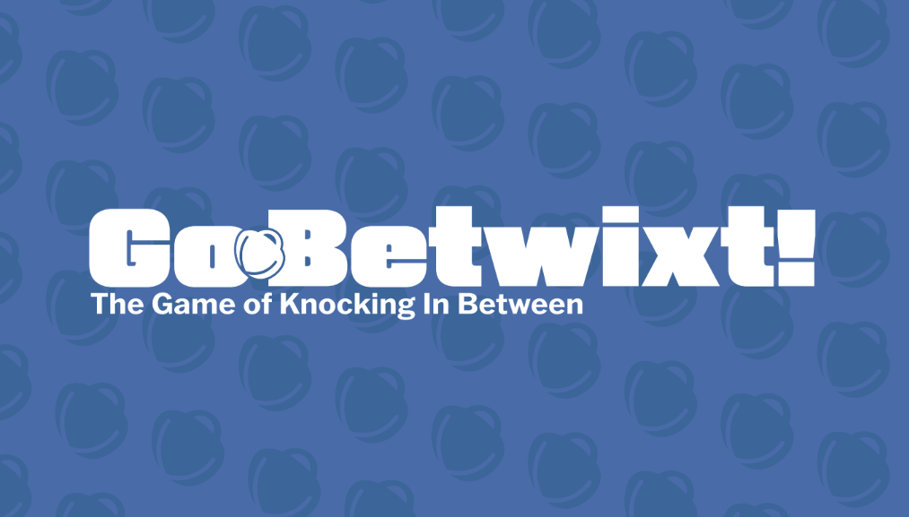

Risk is a classic strategy board game where players compete for global domination. The game is played on a world map divided into territories, and players use armies to conquer and defend these regions. Through a mix of strategy, alliances, and dice-based battles, players expand their empires while trying to eliminate opponents. Risk is both competitive and social, blending careful planning with the thrill of chance, and it’s known for creating epic, hours-long games filled with shifting power dynamics and dramatic turnarounds.Monopoly is a classic real estate trading board game where players buy, sell, and develop properties in an effort to bankrupt their opponents. Players move around the board collecting rent, investing in houses and hotels, and navigating chance events, all while trying to build a property empire. Known for its mix of luck, strategy, and negotiation, Monopoly often sparks competition and lively interactions, making it both a test of financial savvy and a social experience.

Go-Betwixt! is a fast-paced tabletop game like nothing you have ever played before. It is simple and extremly easy to pick up and learn. However, you will quickly find that there are many layers of strategy and skill needed to be great at go-betixt. The game has a unique combination of luck and skill needed to truly succeed. You will find how quickly your competative spirit will be unleashed.

/pic5786795.jpg)